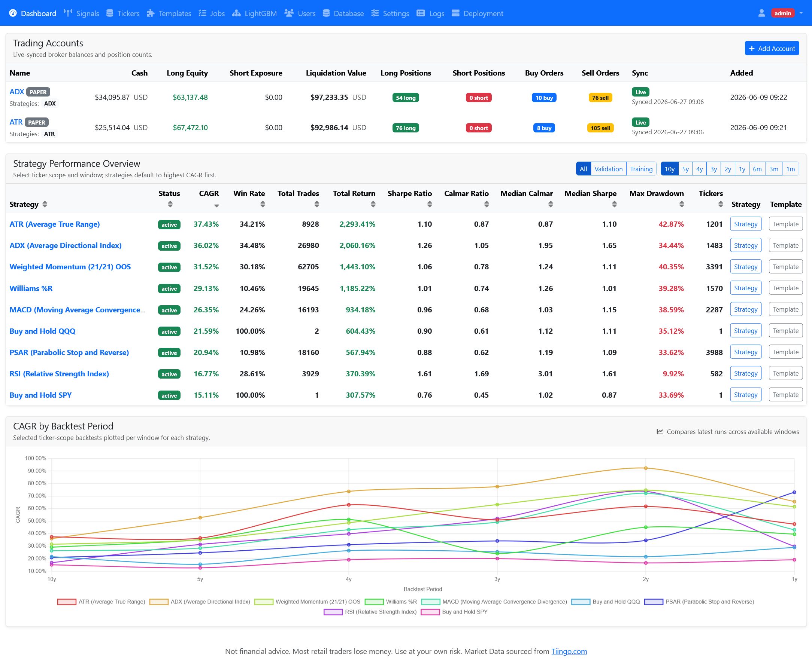
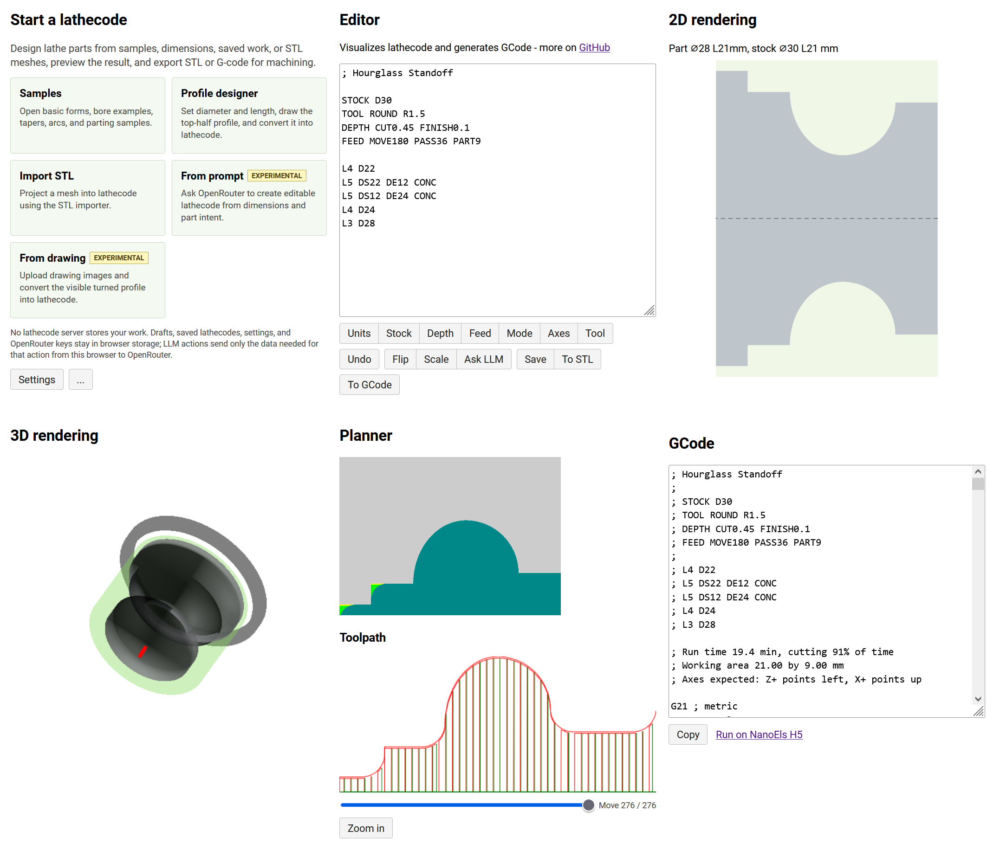
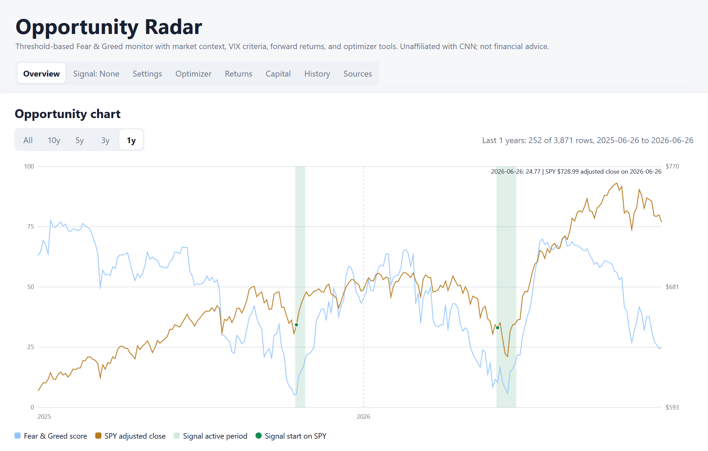
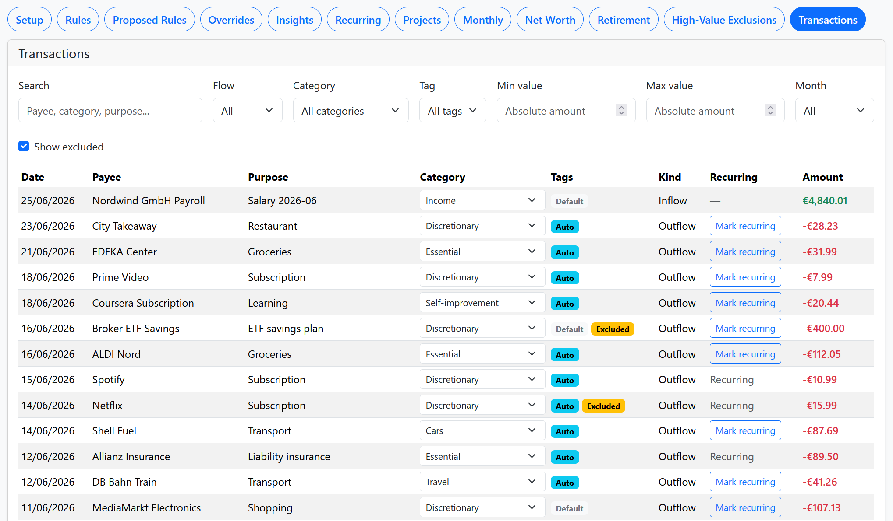
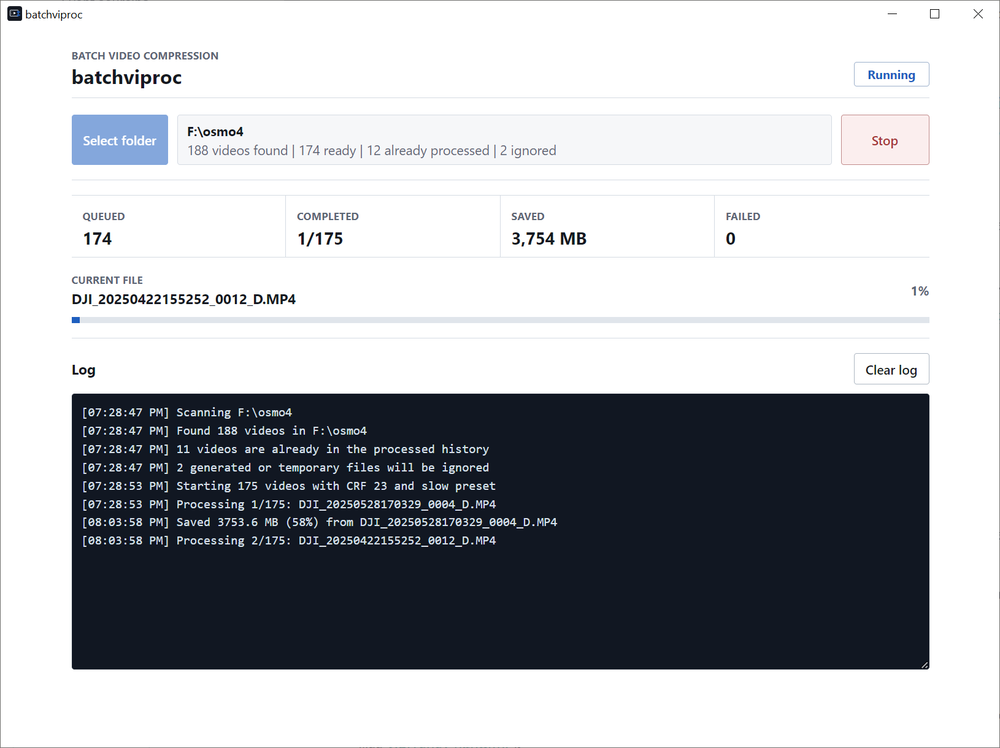
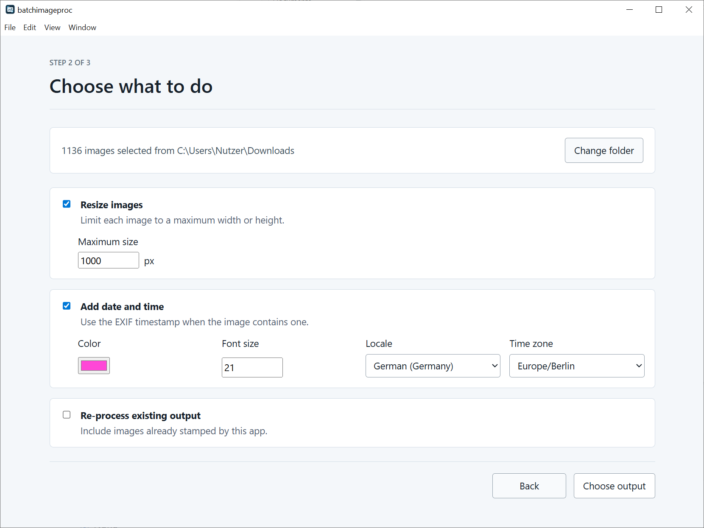
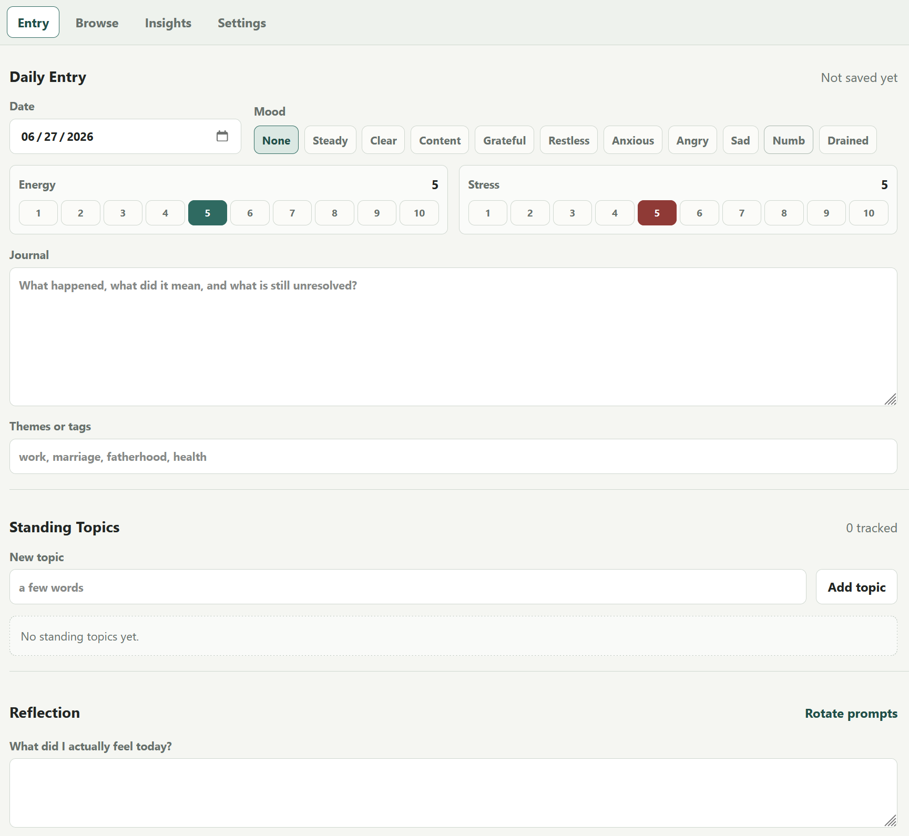
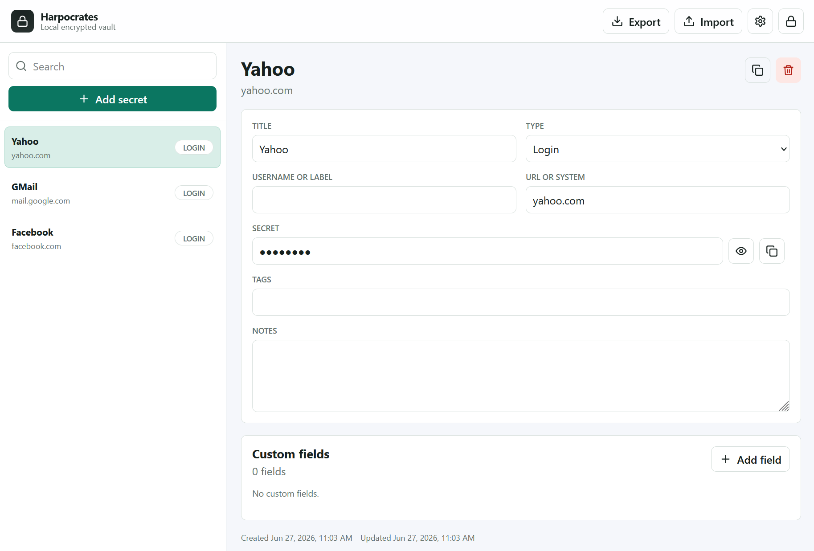
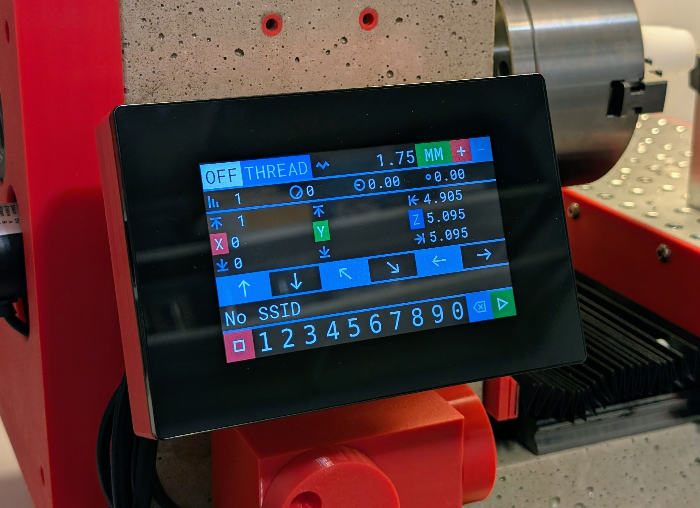
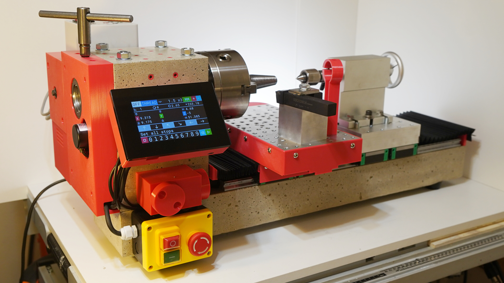

Trading research
StratCraft
Self-hosted web app for testing stock trading strategies on historical data, comparing parameter stability, and optionally running paper or live Alpaca accounts after review.

Self-hosted web app for testing stock trading strategies on historical data, comparing parameter stability, and optionally running paper or live Alpaca accounts after review.

Text format and online editor for lathe parts with circular symmetry. It previews profiles and can convert stock, tools, passes, speeds, tapers, splines, and batches into G-code or STL.



Desktop batch video compression app for scanning folders, skipping already-processed files, running queued conversions, and tracking saved space, progress, failures, and logs.

Desktop batch image processing app for resizing image folders, adding EXIF-based date and time stamps, and controlling locale, time zone, font size, and output options.



